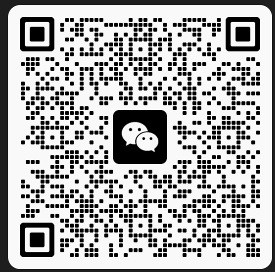

鄉親相冊
查看四張照片 ›
2026 年 11 月 6 日
悉尼市政廳，相聚的一天
從台前的歌聲，到舞台上的合影。
打開活動相冊 →大會安排
- 計劃時間
- 2027 年 10 月
- 舉辦城市
- 澳大利亞 · 悉尼
現在可以報名嗎？
具體日期、場館、費用和報名辦法待公佈。
聯繫會務
可通過「世廣會活動羣」瞭解活動消息。
查看活動羣二維碼

本次羣碼於 2026 年 11 月 25 日生成，12 月 2 日前有效。用同一部手機時，可先保存羣碼，再到微信「掃一掃」選取圖片。
認識澳洲總會
從 2014 年悉尼市政廳的成立大會，到 2025 年在韶關接過會旗，澳洲廣府人（珠璣）聯誼總會把鄉親、社團和家鄉連在一起。
讀總會大事記